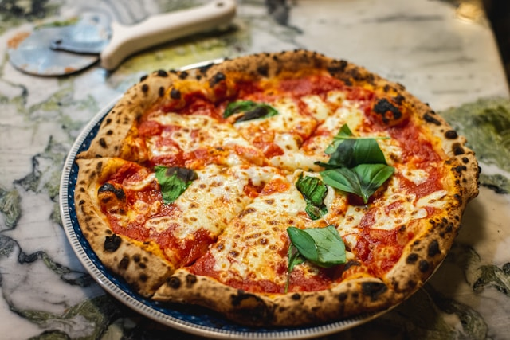

Home
Pizza

Description
Pizza is a globally renowned dish of Italian origin, consisting of a usually round, flattened base of leavened wheat-based dough topped with tomatoes, cheese, and various other ingredients, which is then baked at a high temperature, traditionally in a wood-fired oven.
Ingredients
- High-protein wheat flour (ideally Italian Tipo 00 or strong bread flour)
- Warm water (around 105°F to 110°F / 40°C)
- Active dry yeast or instant yeast
- Fine sea salt
- Extra virgin olive oil
- San Marzano canned whole peeled tomatoes (crushed by hand)
- Fresh mozzarella cheese (fior di latte or low-moisture mozzarella)
- Fresh basil leaves
- Grated Parmigiano-Reggiano or Pecorino Romano cheese
- Dried oregano (optional, for New York style sauce)
Steps
- Combine the warm water and yeast in a small bowl, stirring gently, and let it sit for about 5 minutes until it becomes frothy.
- In a large mixing bowl, combine the flour and sea salt, then make a well in the center and pour in the yeast mixture along with the olive oil.
- Mix the ingredients together until a shaggy dough forms, then transfer it to a floured surface and knead by hand for 8 to 10 minutes until smooth and elastic.
- Place the dough ball into a lightly oiled bowl, cover it with a damp cloth or plastic wrap, and let it rise at room temperature for 1 to 2 hours, or until it doubles in size.
- While the dough rises, prepare the sauce by crushing the canned San Marzano tomatoes by hand or with a blender, and season simply with a pinch of sea salt.
- Preheat your oven to its absolute highest setting—typically 500°F to 550°F (260°C to 290°C)—and place a pizza stone or steel on the top rack to heat up for at least 45 minutes.
- Divide the risen dough into equal portions, gently shape them into tight balls, and let them rest covered on a floured surface for another 20 to 30 minutes.
- Working with one dough ball at a time, press from the center outward on a floured surface to stretch it into a 12-inch circle, leaving a slightly thicker rim around the edge.
- Transfer the stretched dough onto a pizza peel dusted with semolina flour or cornmeal, then quickly spread a thin layer of tomato sauce over the base.
- Top the sauce with torn pieces of fresh mozzarella, fresh basil leaves, a sprinkle of grated Parmigiano-Reggiano, and a light drizzle of extra virgin olive oil.
- Slide the pizza carefully off the peel onto the hot baking stone or steel, and bake for 5 to 7 minutes until the crust is deeply golden and blistered and the cheese is melted.